Invitation
Promise is framed with restraint, enough detail to feel considered, and a private route forward.
Luxury
Heritage luxury maison for status and discretion.
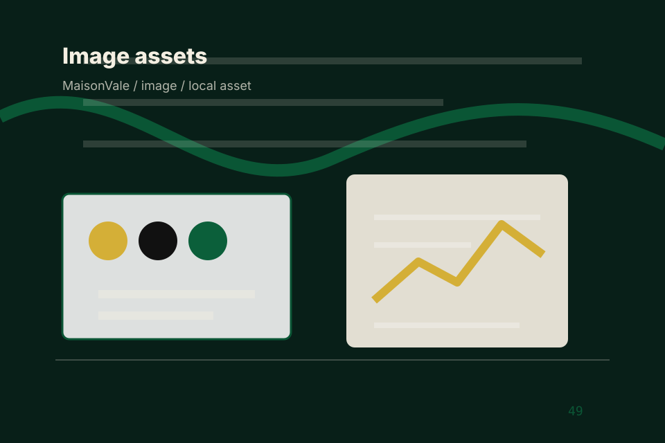
Home / 02
Promise defines the better state Maison is built to create, with enough detail to make the promise believable.
A luxury service site with green-gold maison mood, heritage cards, private access routes, and discreet proof. The section grounds that direction in concrete benefits, visible tradeoffs, and a next route visitors can use when the promise feels relevant.
Open House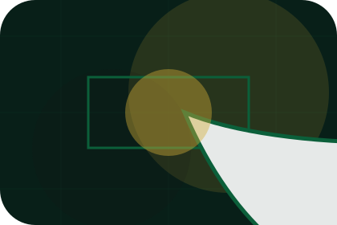
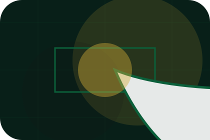
Promise is framed with restraint, enough detail to feel considered, and a private route forward.
Home / 03
Exclusivity adds luxury context to the home route, using the heritage luxury maison structure to support status and discretion before visitors choose a next step.
Maison uses gold hairline cards and focused copy to make the decision easier to scan, aligning the section with status and discretion rather than filling space.
Open MaisonExclusivity is framed with restraint, enough detail to feel considered, and a private route forward.
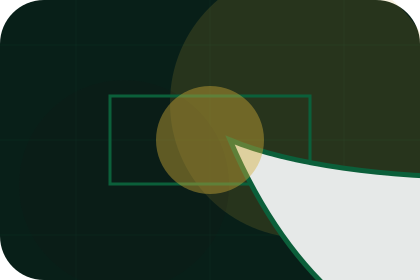
The proof appears through standards, context, and carefully chosen visual evidence rather than volume.
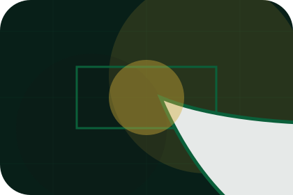
The next action explains what to send, when to expect a response, and how access is handled.
Home / 04
Services explains the practical scope, best-fit situations, and expected outcome so luxury visitors can compare options without decoding jargon.
The section keeps the offer concrete: what is included, who it is best for, what decision it supports, and which linked route gives the deeper detail.
Open ServicesServices is framed with restraint, enough detail to feel considered, and a private route forward.
The proof appears through standards, context, and carefully chosen visual evidence rather than volume.
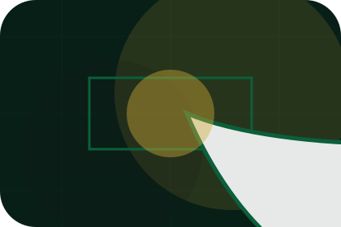
The next action explains what to send, when to expect a response, and how access is handled.
Deep-green private hero
Select the closest route and Maison keeps the next step, proof, and follow-up expectation aligned with status and discretion.
Home / 05
Experience adds luxury context to the home route, using the heritage luxury maison structure to support status and discretion before visitors choose a next step.
Maison uses gold hairline cards and focused copy to make the decision easier to scan, aligning the section with status and discretion rather than filling space.
Open ExperienceExperience is framed with restraint, enough detail to feel considered, and a private route forward.
The proof appears through standards, context, and carefully chosen visual evidence rather than volume.
The next action explains what to send, when to expect a response, and how access is handled.
Home / 06
Portfolio adds luxury context to the home route, using the heritage luxury maison structure to support status and discretion before visitors choose a next step.
Maison uses gold hairline cards and focused copy to make the decision easier to scan, aligning the section with status and discretion rather than filling space.
Open PortfolioPortfolio is framed with restraint, enough detail to feel considered, and a private route forward.
The proof appears through standards, context, and carefully chosen visual evidence rather than volume.
The next action explains what to send, when to expect a response, and how access is handled.
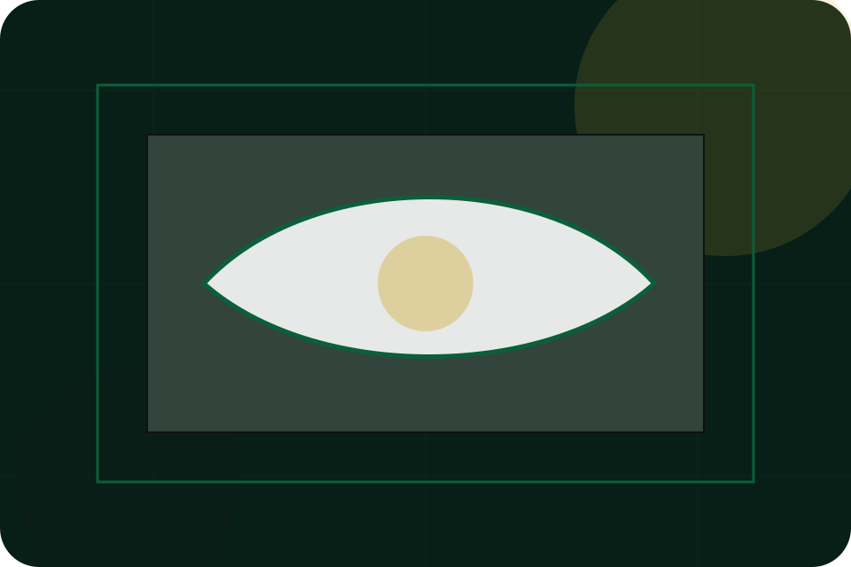
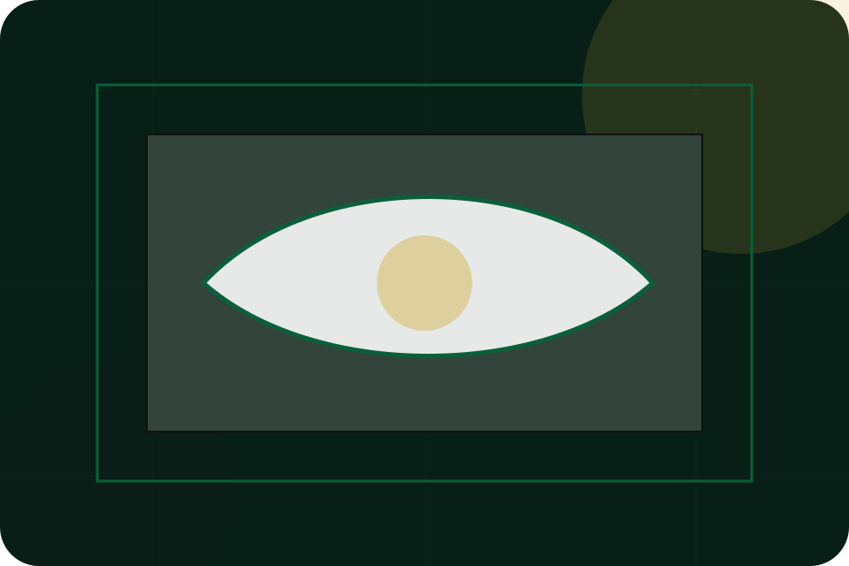
Home / 07
Discretion adds luxury context to the home route, using the heritage luxury maison structure to support status and discretion before visitors choose a next step.
Maison uses gold hairline cards and focused copy to make the decision easier to scan, aligning the section with status and discretion rather than filling space.
Open Private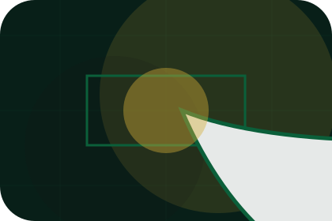
Discretion is framed with restraint, enough detail to feel considered, and a private route forward.
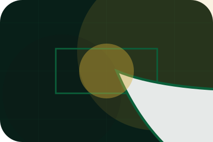
The proof appears through standards, context, and carefully chosen visual evidence rather than volume.
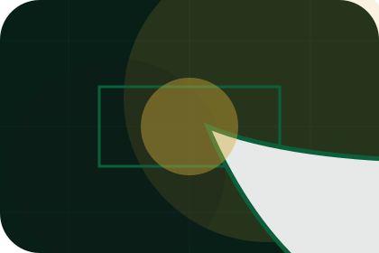
The next action explains what to send, when to expect a response, and how access is handled.
Home / 08
Trust gives the proof layer for home: standards, evidence, and reassurance that make the next decision feel grounded.
Instead of relying on vague claims, Maison presents visible standards, process cues, and proof artifacts that help luxury visitors judge fit.
Open JournalTrust is framed with restraint, enough detail to feel considered, and a private route forward.
The proof appears through standards, context, and carefully chosen visual evidence rather than volume.
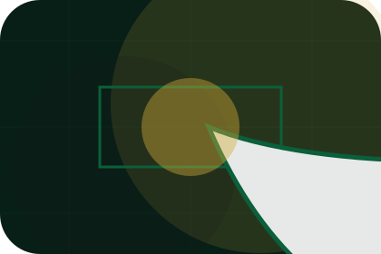
The next action explains what to send, when to expect a response, and how access is handled.
Home / 09
Questions handles buying doubts directly so visitors can understand timing, fit, limits, and the safest next step.
Answers are short by design: enough to remove hesitation, not so much that the page turns into documentation before the visitor can act.
Open ContactQuestions is framed with restraint, enough detail to feel considered, and a private route forward.
The proof appears through standards, context, and carefully chosen visual evidence rather than volume.
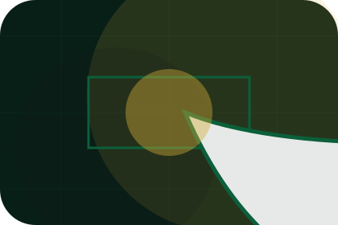
The next action explains what to send, when to expect a response, and how access is handled.
Maison starts with a focused intake so the recommendation matches the visitor's context, risk, timing, and readiness.
Each route explains inclusions, exclusions, documents, timing, and the decision points that affect final delivery.
The theme uses heritage luxury maison, gold hairline cards, and private enquiry reveal, membership request, concierge stepper rather than a shared template rhythm.
Deep-green private hero
Select the closest route and Maison keeps the next step, proof, and follow-up expectation aligned with status and discretion.
Home / 10
Maison closes the home route with a clear action, a quick reminder of the value, and a low-friction way to request private access.
Visitors who are ready can use the primary action. Visitors who are still comparing can scan the section links, proof, and support routes before they request private access.
Request Private AccessThe final block keeps the choice simple: act now, compare one more proof route, or send enough detail for a focused response.
Request Private Accessstatus and discretion
A luxury service site with green-gold maison mood, heritage cards, private access routes, and discreet proof. Home ends with a direct path to request private access, plus enough context for visitors who still need to compare.
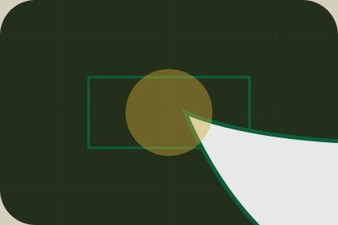
Request Private Access